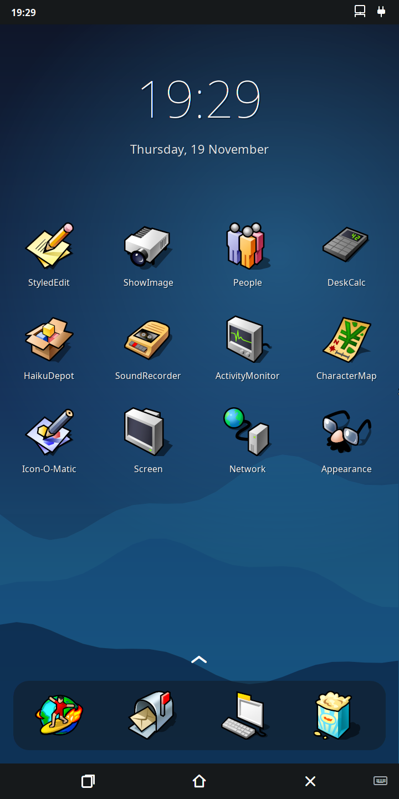
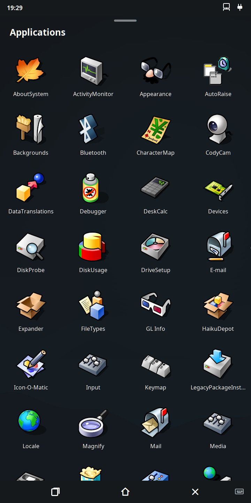
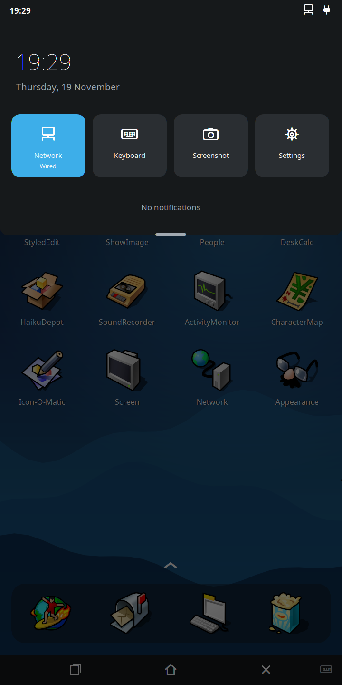
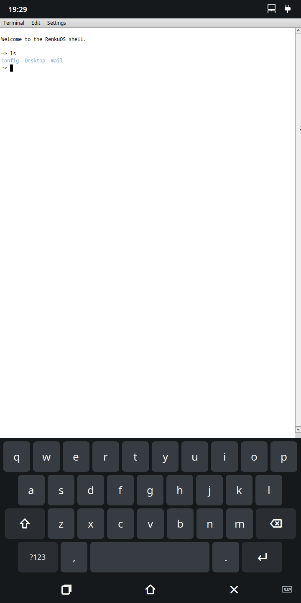
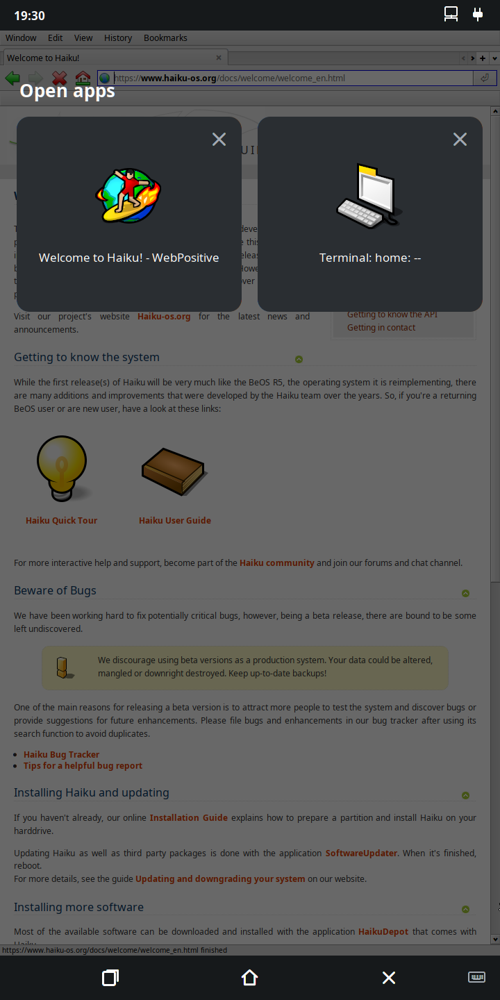
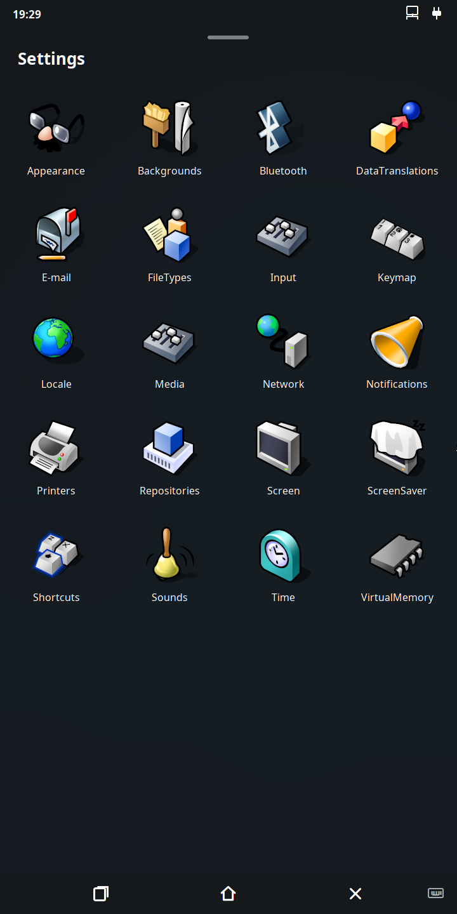

How it works
- One app,
MobileShell, takes the place of Tracker's desktop and the Deskbar. It's started by Renku's launch daemon and shipped as a regular.hpkg. - Renku's app_server has no window-manager hooks, so the shell lists windows through the same private API the Deskbar uses, and makes each one borderless and full-screen through its scripting suite.
- The on-screen keyboard never takes focus. It types through a small input_server add-on, so every app gets real key presses.
- QEMU's
virtio-vgareports 720×1440, and Renku's virtio GPU driver takes it. - The image is the Renku nightly with the package added, written on Linux with Renku's own
bfs_shell. No VM clicks needed.
Try it
Build steps are in the README. Once built:
make package && scripts/build-image.sh
DISPLAY_MODE=gtk scripts/qemu.sh start